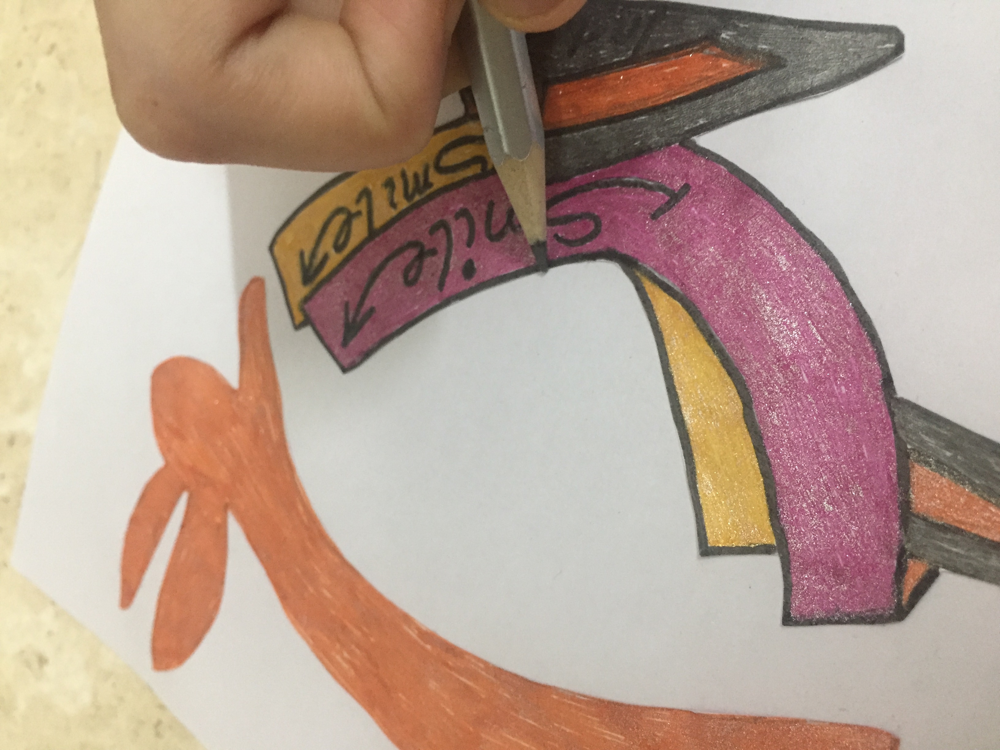

<<=Back To Home
Mathematics Holiday Homework
Mathematics Holiday Homework-
Design a logo or a badge for an organisation promoting a happiness campaign. You may use a maximum
of 3 mathematical concepts while designing the logo. Give the organisation a name and describe how
your logo relates to the campaign briefly in 50-100 words on an A-4 sheet. Show your rough drawings and
progress of work as evidence of designing.
Logo:
Evidence of designing:
